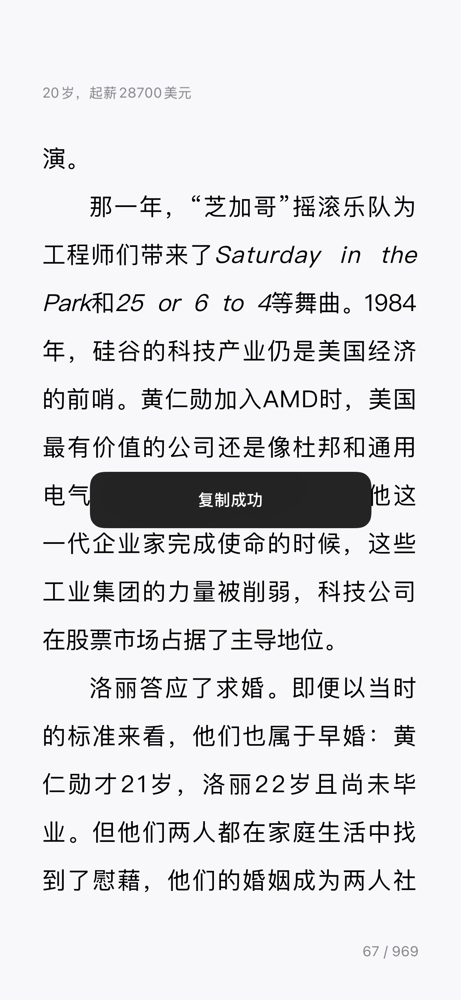
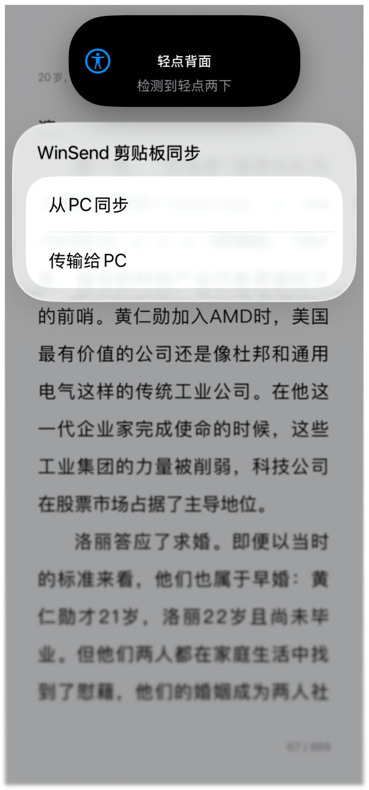
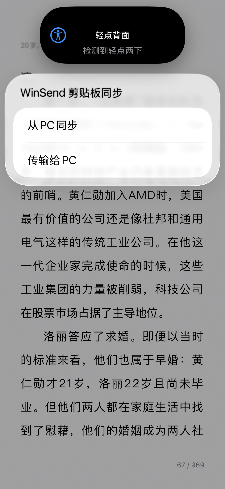
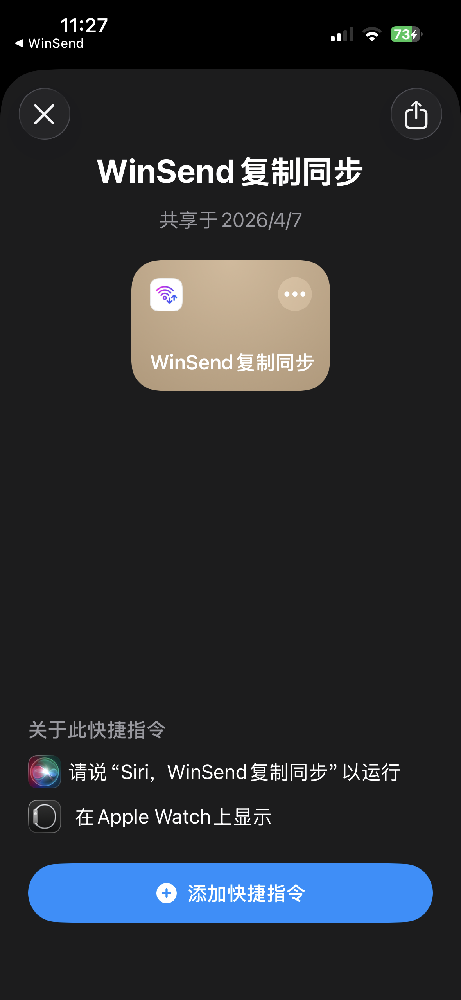
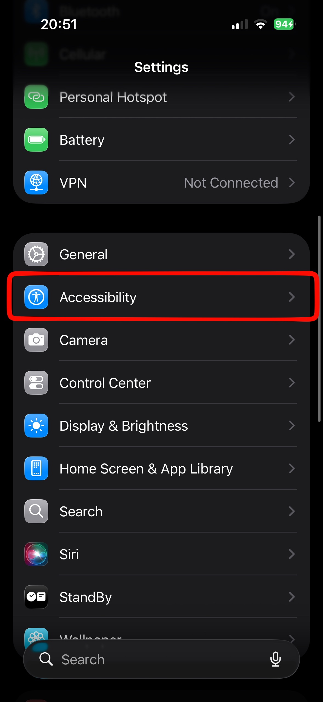
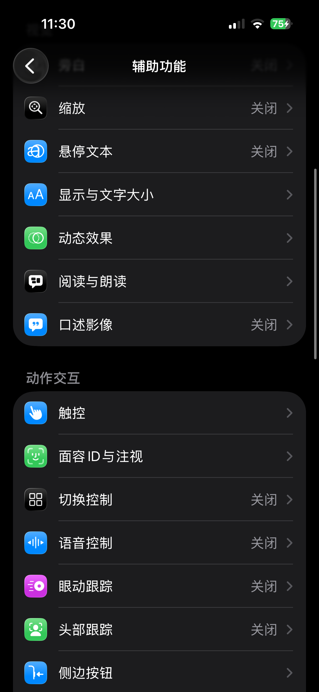
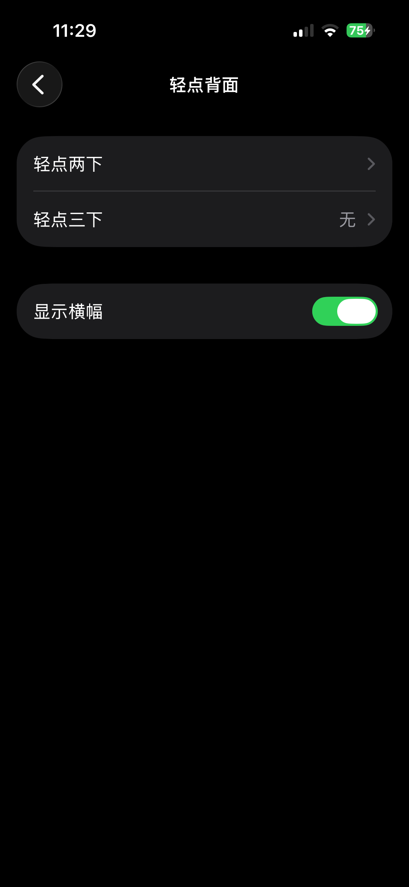
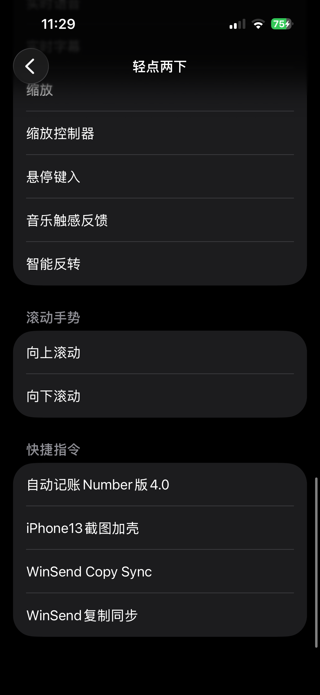

Through iPhone's Shortcuts + Back Tap trigger method, WinSend achieves the closest to system-level experience iOS and Windows cross-system data sync.
WinSend enables clipboard copy and transfer with Windows without opening the app. This is one of WinSend's most intelligent features that distinguishes it from traditional transfer software like LocalSend.
Traditional transfer software all require opening the app to complete transfer tasks, unable to achieve AirDrop-like seamless copy sync.
We've achieved the ability to copy and sync in any app with just two taps on the back of the phone. This is currently the closest transfer functionality to AirDrop.
Actual Usage Effect
Below is a practical demonstration
Copy Content in Any App


Double Tap Back of Phone

Select Sync to Windows

Sync Successful

This way, on Windows device you can directly use Ctrl + V to paste the content just copied on iPhone.
Detailed Setup Tutorial
Install once, use anytime
Step 1: Install WinSend iOS and Windows Client
First ensure both iPhone and Windows are installed and running normally in the same network environment.
Installation process can be found at: WinSend Installation and Pairing Setup
Step 2: Open WinSend App, Enter Shortcuts Setup Page


Step 3: Add Shortcut
Complete shortcut addition through the entry provided in the app. You can view it in the Shortcuts app.


Step 4: Set Up Back Double Tap / Triple Tap Trigger
Bind the newly added shortcut to iPhone's "Back Tap" feature. We recommend trying double tap first. If concerned about accidental triggers, you can also use triple tap.




Why This Approach Is Closer to System-Level Experience
Because it changes the "open app then send" action to "copy then directly trigger" action. For people who frequently transfer short content, this difference is very obvious.
If you're interested in iOS Shortcuts, you can continue to read How WinSend Works.